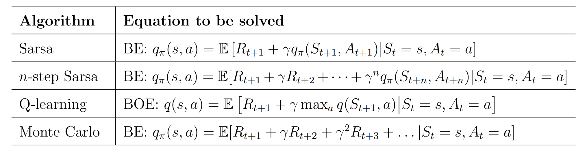
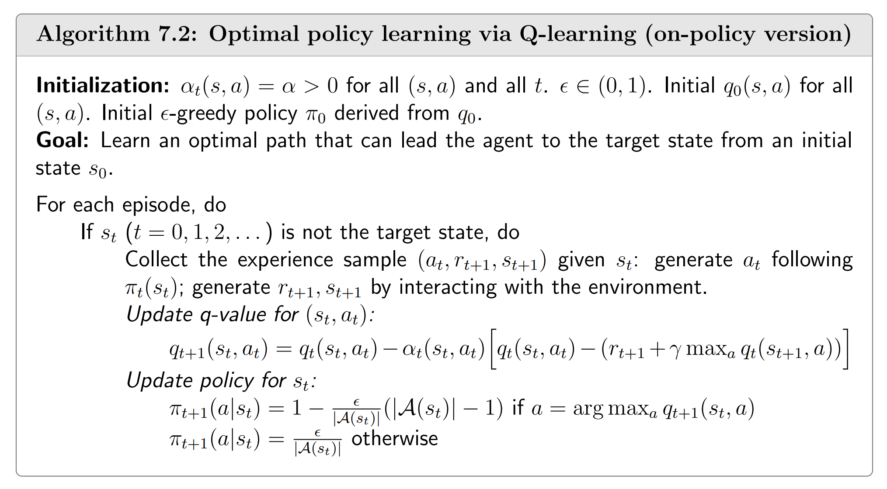
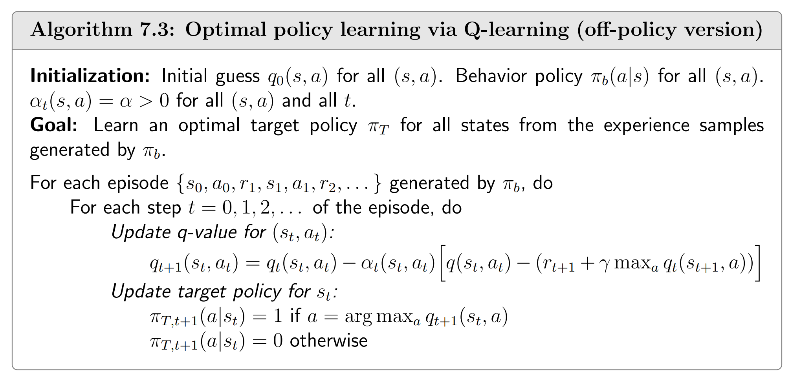

终于到了大名鼎鼎的Q-learning算法。
on-policy 算法和 off-policy 算法的区别在于采集数据的策略和需要更新的策略是否相同。
Q-learning也是一个TD算法，不过它与我们之前介绍的TD算法的区别在于，它的采集数据的策略和需要更新的策略可以不同，因此它可以（但不一定）是一个 off-policy 算法，而之前的是 on-policy 算法。

通过比较这些TD算法解决的不同数学问题，我们会注意到其他几个算法解决的方程与策略 $\pi$ 有关，而Q-learning尝试解决的数学问题是贝尔曼最优方程：
$$ q(s, a) = \mathbb{E} \left[ R_{t+1} + \gamma \max_{a'} q(S_{t+1}, a') \mid S_t = s, A_t = a \right] $$这与策略 $\pi$ 无关。
为什么说这是贝尔曼最优方程呢？因为我们可以证明，如果令 $v(s) = \max_a q(s,a)$，则这个方程组的解 $(q,v)$ 和贝尔曼最优方程的解 $(q,v)$ 是相同的。（证明它们的解集互相包含即可）
由于Q-learning可以是on-policy算法，也可以是off-policy算法，我们同时给出两种形式：


类似之前的TD方法，我们把 $\max_{a'}q(s,a')$ 换成了 $\max_{a'} q_t(s_{t+1},a')$.
这里的 off-policy 似乎有一处typo，在 TD error 那里， $q(s_t,a_t)$ 似乎应为 $q_t(s_t,a_t)$.
此外，我们指出，单知道 $q$ 或者 $v$ 是无法推出策略的。即使同时知道 $q$ 和 $v$ 也无法推出策略。考虑一个每个状态都是结束状态的网格，agent只要走出一步就会结束行动，那么我们已经知道$q$ 了。如果所有的奖励都相同，那么我们也知道了 $v$，但我们明显不知道策略。